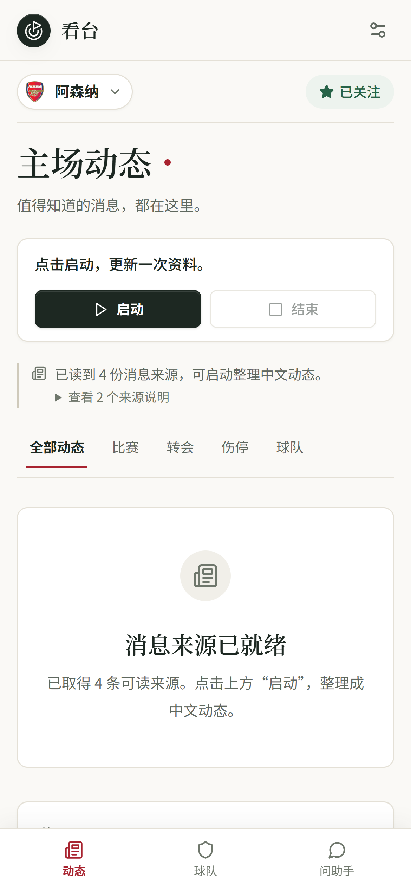

动态 THE FEED
按球队阅读中文消息流。英文报道由模型整理成中文，每条消息标注来源层级，展开后仍可点链接核对原文。
按球队中文整理层数与认同量
OFFICIAL直接陈述
DATASET直接陈述 · 标注数据源
PRESS据 X 报道
COMMUNITY社区有说法 · 附认同量，不提级
一支球队的动态、阵容、赛程与数据，整理成中文，存在你自己的电脑里。 没有账号，没有推荐算法，也没有替你做判断的“已核实”。
一分四十七秒，英语旁白。画面由代码逐帧生成，产品片段全部来自真实界面。
采集、缓存、调度、失败重试都在后台。界面上不出现技术细节，也不出现“加载中”之外的第三种状态。
按球队阅读中文消息流。英文报道由模型整理成中文，每条消息标注来源层级，展开后仍可点链接核对原文。
资料、一线队名单与有来源的照片、赛季表现、积分榜、胜平负与主客场、未来赛程。数值以数据源为准，缺的就留空。
直接对话，或从今日速览、比赛前瞻、赛后复盘、转会核验、战术讲解进入。回答带引用，引用只来自这一轮真正读过的原文。
不是功能列表，是每一次取舍的依据。它们来自用真实 bug 换来的边界。
我们整合信息，不认证真伪。你看到的是「谁在什么时候说了什么」——真伪由你判断。
DELETE ONLY WHAT ISN'T THIS CLUB'S
不盖“已核实”的章，也不因为无法确认就删掉一条消息。只删除不属于本队的内容，并数清删了什么。
TIER SETS TONE, NOT STATUS
官网直接陈述，媒体写“据 X 报道”，社区写“社区有说法”并附认同量。社区源不是低一等的媒体源，它的价值在时效与现场性。
WHEN UNSURE, LEAVE IT BLANK
比分、阵容、成员关系、照片都来自可追溯的采集。缺数据就留空，不生成假肖像，也不让模型改写事实字段。



需要 Python 3.11+ 与 Node.js 22+。Windows 下双击启动脚本即可，其余平台按终端里的四步执行。
# 1 · 准备环境 PS> python -m venv .venv PS> .\.venv\Scripts\python.exe -m pip install -r requirements.txt -c requirements.lock.txt # 2 · 构建页面 PS> npm ci PS> npm run build # 3 · 启动服务 PS> .\.venv\Scripts\python.exe -m uvicorn server.main:app --host 127.0.0.1 --port 9080 → http://127.0.0.1:9080/ # 4 · 设置里填模型服务商 → 关注球队 → 动态页点「启动」
data/，凭据加密存放；删掉 key 则全部密钥不可恢复一个压缩包，解压后双击 启动看台.cmd。首次启动自动准备环境、安装依赖并校验页面构建，之后每次打开只要几秒。